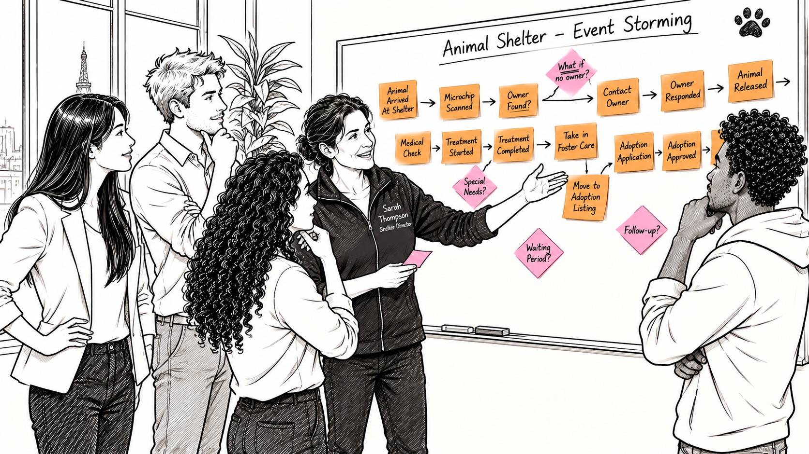

9 Discovering the Big Picture

The team is ready for its first Event Storming workshop. They’ve read a little about the method (Brandolini 2021) and spent some time with Caramelo’s story to familiarize themselves with the animal shelter domain. They know they’ll meet Sarah Thompson, the shelter director, and that she’ll help them understand how things work in the shelter.
But reading about Event Storming and actually doing it are two different things.
Leon takes responsibility for facilitating the workshop. As the Product Owner, he’s the natural choice. He’s the one who brought the project to life, connected the team with the shelter, and organized the experiment. Kim offers to support him. She has conducted user interviews before and feels comfortable talking to people about their work, asking questions, and trying to understand their experiences.
The plan for the day is straightforward. They start with a big picture Event Storming session to get an overview of the entire shelter domain. In the afternoon, they zoom in on Animal Intake. Leon thinks this is a good way to get everyone familiar with the method and the domain before exploring the first specific area in detail.
Sarah arrives at the company office. She knows the shelter’s daily operations inside out, but she hasn’t worked with this particular group before. She’s curious to see what they come up with.
The group enters the meeting room. There are no chairs around the table. In fact, there is hardly a table left in the room. The furniture is pushed against the walls, leaving plenty of space in front of the large whiteboard.
One of the basic rules of Event Storming: everyone stays on their feet. Sitting down makes it all too easy to slip into passive meeting mode. And once one person sits, others tend to follow.
Leon looks at the large, empty wall. He has prepared a short introduction, but he doesn’t want to spend too much time explaining a method nobody has experienced yet. They need to get started.
“Okay, let’s get started. Since this is our first Event Storming session, I suggest we begin with the big picture. We want to get an overview of what happens in the shelter. Not just when an animal arrives, but everything that happens during its time with you.”
He looks around the room.
“Before we start asking Sarah a hundred questions, I’d like everyone to contribute what they already know or can imagine. We’ll start by writing down events. An event is a fact that has happened and is relevant to the business or the user.”
Leon picks up an orange sticky note and a marker.
“One event per sticky note. Try to write it in past tense, like ‘Animal Arrived At Shelter’. Don’t worry about the order yet. Duplicates are fine. Just write down everything that comes to mind and put it on the wall. We’ll make sense of it together afterwards.”
That’s it. No elaborate explanation of colors, symbols, or modeling conventions. Just one simple idea: write down things that happened.
Leon has read about plenty of other concepts, too. Commands, actors, policies, aggregates, and all sorts of things that can be introduced during an Event Storming or Modeling session. But one piece of advice from the introductions he read sticks with him: don’t introduce concepts before the group needs them.
For now, orange sticky notes are enough.
9.1 Getting started
The first few minutes are a little awkward.
Everyone looks at the wall, then at the sticky notes, then at each other. It isn’t that they have nothing to say. They’re simply not used to working this way. Usually, someone prepares a document or a diagram before a meeting. Here, they’re supposed to put their thoughts on the wall without knowing where they’ll end up.
Leon decides to make the first move.
He writes Animal Arrived At Shelter on an orange sticky note and puts it on the wall. Then he adds another one: Medical Treatment Done.
Chris follows. He writes down Microchip Scanned and adds it to the growing collection.
Kim and Mina start writing, too. They remember several things from Caramelo’s story and try to translate them into events. Sarah watches for a moment, apparently waiting to see what the team is doing. Then she picks up a marker herself and joins in.
Nobody is particularly concerned about the exact wording. Some notes describe broad activities, others are more specific. A few things appear twice. That’s perfectly fine.
After about fifteen minutes, the wall is covered with orange sticky notes. There’s no order to them, and nobody has tried to create one. But there’s already enough material to start a conversation.
Leon steps back and looks at the wall.
“Okay, that’s a great start. Now let’s see if we can put some order into this.”
9.2 Finding the flow
The next step is to arrange the events from left to right, creating an imaginary timeline.
What happens first? What happens next? Which events belong before or after others?
It sounds simple enough, but as soon as they start moving the stickies around, discussions emerge.
Some events are easy to place. An animal has to arrive before it can be examined. That much is obvious. Other notes are less clear. Does something happen immediately after arrival, or can it happen later? Are two notes describing separate activities or different aspects of the same situation?
Kim is particularly interested in these discussions.
At first, she expects Event Storming to be a rather technical modeling exercise. But as she listens to Sarah explaining the reasons behind certain activities, she recognizes something familiar.
This isn’t so different from a user interview.
She’s used to asking people how they work, what happens when they encounter a particular situation, and what they do next. The difference is that now everyone can see the answers taking shape on the wall.
Instead of keeping her thoughts to herself, Kim starts asking more specific questions.
“Sarah, when an animal arrives, what do you usually do first? Is there something that happens for every animal, regardless of its condition?”
Sarah explains the initial steps. The others listen, occasionally adding a note or moving something that’s already on the wall.
Kim is getting into it.
“So, does that happen before the medical examination? Or is it part of the examination itself?”
Sarah explains that they scan the microchip as soon as an animal arrives.
Mina looks at the notes on the wall.
“Wait a minute. I thought the microchip was scanned during the medical check.”
Sarah clarifies that scanning the chip is part of the intake process. It doesn’t require a veterinarian. They want to identify the animal as early as possible, ideally finding out whether it has an owner who can be contacted.
Mina looks at Chris’s sticky note.
“Then this one belongs much earlier in the timeline.”
She moves Microchip Scanned towards the beginning.
It’s a small correction, but it changes how the team understands the process.
When they read Caramelo’s story, the microchip is scanned during the medical assessment. They simply assume that’s how things work. It seems reasonable enough. After all, checking a microchip sounds like something a veterinarian would do.
But Caramelo’s story isn’t a description of the shelter’s actual operations. It’s an introduction to the domain, and the team is now discovering that some of the details they take for granted don’t match reality.
Nobody deliberately makes a wrong decision. They’ve filled a gap in their understanding with an assumption they haven’t even noticed making.
Now the assumption is visible, and Sarah corrects it.
The team continues arranging the notes.
9.3 When the wall starts talking back
The conversation becomes more animated as the timeline develops.
Kim is now asking questions almost continuously. Chris contributes observations and occasionally suggests another event. Mina, who often keeps herself a little more in the background during group discussions, is increasingly involved.
Sarah is no longer simply answering questions. She’s pointing at notes, correcting the sequence, and adding things the team hasn’t thought of.
At one point, she explains what happens when the microchip scan identifies a registered owner.
That opens up an entirely new branch of the story.
Until now, the team has mostly been thinking about the animal’s journey through the shelter. But finding an owner introduces another process that can unfold alongside the animal’s care.
They start asking questions.
What happens when the registry returns an owner? How do they contact that person? What if the contact details are outdated? What if nobody answers?
The conversation quickly becomes more detailed than the team anticipates.
Chris is particularly interested in understanding how long they keep trying to reach the owner. There are several possibilities, and each seems to lead to another question.
Leon listens for a while. He doesn’t want to interrupt a useful discussion, but he also knows they’re supposed to be creating a big picture of the shelter domain, not solving every operational detail of Animal Intake right now.
He looks at the wall, then picks up a pink sticky note.
He turns it by forty-five degrees and writes a short question on it.
“Let’s park this one for a moment. I’ve read about a useful technique for exactly this situation. These are called Hot Spots. We use them to mark questions or topics that need further clarification.”
He places the pink note next to the branch they’ve just discovered.
“We don’t have to resolve everything right now. Let’s keep the question visible, continue with the bigger picture, and come back to it when we zoom into Animal Intake this afternoon.”
The group accepts the idea immediately.
They’ve encountered something they can’t answer yet, but there’s no need to lose track of it or spend the next twenty minutes trying to resolve it.
The Hot Spot gives the question a place on the wall without forcing them to answer it immediately.
As the workshop continues, more questions appear. Some are about missing information. Others highlight things that seem problematic or potentially inefficient in the process. The pink notes begin to accumulate around the orange ones.
Leon did not introduce a legend of every possible type of sticky note at the beginning. Whenever the group encounters a situation that calls for another concept, he introduces it.
The legend on the wall grows with the workshop.
And so does the team’s understanding of the shelter.
9.4 The room comes alive
I have participated in many Event Storming sessions, and there’s a moment that I particularly enjoy.
It doesn’t happen at a predictable time. Sometimes it takes half an hour, sometimes longer. But at some point, the group becomes fully engaged.
People stop worrying about whether they’re doing the exercise correctly. They start discussing the actual business. Someone notices a missing step. Another person challenges an assumption. Sticky notes are moved around, questions are asked, and new connections emerge.
At this point, you can feel the energy in the room. It’s almost magical.
That’s what’s happening here.
Kim has found her rhythm. She’s asking questions that help Sarah explain the shelter’s work in more detail. Mina is actively contributing, too. She started the morning a little reserved, but the more they talk about the animals and what happens to them, the more interested she becomes.
She’s not just thinking about a software interface or a technical implementation. She genuinely wants to understand what happens to the animals.
Chris brings his usual enthusiasm into the conversation. Every new discovery seems to give him another idea or question. Occasionally, Leon has to bring the discussion back to the bigger picture, but Chris doesn’t seem to take that personally.
Sarah, too, is becoming more involved. She came prepared to explain how the shelter works. Now she’s collaborating with the team to build a picture of it.
The wall is no longer just a collection of sticky notes. It’s becoming a shared story.
And the team is beginning to see how much they didn’t know.
9.5 Walking the story
After three hours, Leon decides it’s time to close the session.
There are still plenty of questions, and the wall is far from complete. But they’ve made good progress. They’ve explored the broad landscape of the shelter, discovered several branches in the process, and collected a number of questions for later clarification.
Leon suggests one final exercise.
“Before we stop, I’d like someone to walk us through the story we’ve created. Start at the beginning and follow the events on the wall, one by one. Tell us what happens, as if you’re explaining the shelter’s work to someone who has never seen it before.”
He looks around the room.
“Mina, would you like to give it a try?”
Mina looks a little surprised, but nods.
She steps towards the wall and begins at the left-hand side.
“Okay. So, an animal arrives at the shelter. The first thing they do is scan the microchip to see whether the animal can be identified. If they find a registered owner, they try to contact that person…”
She continues along the timeline, explaining the events and following the branches the team created.
Every now and then, she stops to check whether she understands something correctly. Sarah confirms some details and clarifies others.
Then Mina pauses at the alternative Intake branch.
“Wait. What happens to the animal while you’re trying to contact the owner?”
She looks at Sarah.
The question hasn’t been answered during the earlier discussion. They’ve focused on what happens when an owner can be identified, but they haven’t really explored what happens to the animal in parallel.
Leon picks up another pink sticky note.
Another Hot Spot.
The group briefly discusses the question, but decides to leave it for the afternoon. They don’t need to resolve every detail now. The important thing is that they’ve noticed the gap.
Mina continues.
There are a few more interruptions, a couple of corrections, and another question that ends up on the wall. That’s exactly what Leon hoped will happen.
When she finally reaches the end of the story, they step back and look at the result.
It isn’t a complete description of everything that happens in the shelter. Not even close.
But it’s a surprisingly coherent picture of a domain that most of them knew almost nothing about just a few hours earlier.
9.6 Three hours well spent
Sarah looks at the wall for a moment.
She knows there are countless other things they can discuss. The shelter’s work is full of exceptions, special situations, and details that the team hasn’t even touched yet.
Still, she’s impressed.
The team managed to capture a good overview of the shelter’s operations in just three hours. More importantly, the questions they’ve asked show her that they’re genuinely interested in understanding how things work.
She has enjoyed the session.
The team, too, seems energized. They started the morning with some orange sticky notes and a little uncertainty about what to do with them. Now they have a wall full of events, several branches, and a growing collection of Hot Spots.
Leon is pleased. He was a little unsure how the workshop will unfold at first, but the format turns out to be much more natural than he expected. He didn’t need to explain a complicated method or had to control every conversation. His job was mostly to keep an eye on the bigger picture and help the group move forward.
Kim is still thinking about how familiar the whole experience feels. She expected to contribute through her designs and user journey expertise. Instead, she finds herself asking questions and helping Sarah tell the story. It feels surprisingly close to user research, only with everyone involved in making sense of the answers.
Mina is happy, too. She discovered that she can contribute much more than she initially thought. And the subject matter makes a difference. She genuinely cares about what happens to the animals.
Chris is already looking forward to exploring what they can do with all this information.
Sarah thanks the team and says she’s looking forward to the afternoon. There’s still a lot to discuss, but the morning was both fun and productive.
They agree to meet again after lunch.
After three hours on their feet, the team leaves the room for a well-deserved break. They enjoy lunch together, chatting about all sorts of things. But sooner or later, the conversation finds its way back to the workshop.
They talk about the microchip discovery, the different branches of the story, and the questions they’ve parked for later.
Three hours earlier, none of them knew quite what to expect.
Now they’re looking forward to doing it again.
Only this time, they’ll zoom in.